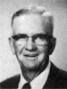

Mahonri and Ethelyn Buchanan Breinholt Family
Home
Histories
Charts
Photos
Maps
Restricted
News
Info
Contact
| <--(return)-- |   John Buchanan - Nancy Ann Bach(e) |   Archibald Waller Overton Buchanan - Ann Marie Larsen |
----> |  Ethelyn Buchanan - Mahonri Breinholt |
| Mahonri R Breinholt Married Wilda Oldroyd The 1st child of Ethelyn Buchanan and Mahonri Breinholt |
|
| 12 | Velda Breinholt Married Franklin Gammon and Merlin Roper The 2nd child of Ethelyn Buchanan and Mahonri Breinholt |
| Sterling Breinholt Married Maurine Cowley The 3rd child of Ethelyn Buchanan and Mahonri Breinholt |
|
| Ariel M Breinholt Married Arnell Oldroyd The 4th child of Ethelyn Buchanan and Mahonri Breinholt |
|
| Archie Leo Breinholt Married Verla Hendrickson The 5th child of Ethelyn Buchanan and Mahonri Breinholt |
|
| James Elmo Breinholt Married Rose Marie Earl The 6th child of Ethelyn Buchanan and Mahonri Breinholt |
|
 |
Barbara Ann Breinholt Married George Hill Wilson The 7th child of Ethelyn Buchanan and Mahonri Breinholt |
Back to Buchanan Family History web pages.